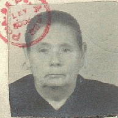

Ana Hipperdinger
Born: 10 Apr 1888, Hinojo - Buenos Aires - Argentina
Married 13 Nov 1905, Olavarria - Bs.Aires - Argentina, to Matías Wagner Fritz
Died: 26 May 1957, Hinojo - Buenos Aires - Argentina
Occupation: Quehaceres del Hogar

Foto de la Cédula de Identidad.-
|
Sus padres llegan a Argentina en Diciembre de 1877.-
|